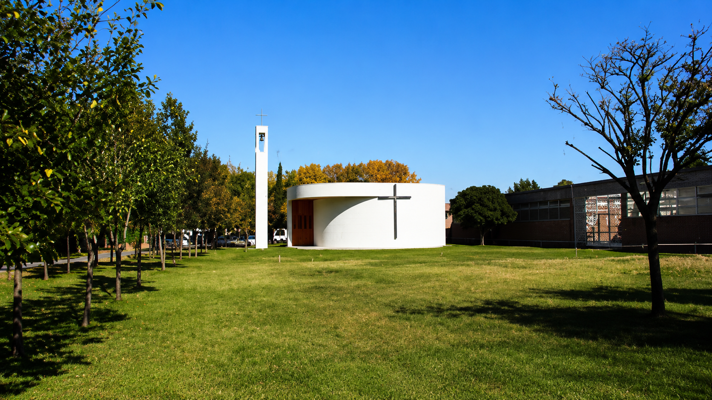

Un equipo que convirtió la preocupación en acción tecnológica para proteger a los vecinos del sur porteño.
Somos un equipo de cinco estudiantes comprometidos con la resiliencia urbana y la seguridad de los vecinos del sur de la Ciudad de Buenos Aires.
Nuestro proyecto nació al observar que la zona sur históricamente ha sido la más vulnerable ante inundaciones, debido a su topografía baja y la proximidad a la cuenca Matanza-Riachuelo. Queremos ser el puente entre la información técnica y la seguridad de cada hogar del sur porteño.
La Comuna 8 sufre inundaciones recurrentes, especialmente con lluvias intensas. Al ser una zona baja y estar próxima a cursos de agua como el arroyo Cildáñez, el agua se acumula rápidamente causando daños materiales, pérdidas económicas y riesgos para la salud.
Elegimos Villa Soldati como punto de partida porque entendimos que la falta de alertas tempranas es un problema real. Contactamos a la presidenta del barrio, realizamos un relevamiento de preguntas a los habitantes sobre la frecuencia de las inundaciones y sus consecuencias.
Diseñamos un sistema que integra sensores ESP32 con conectividad WiFi para medir el nivel del agua en tiempo real. A través de una plataforma web y notificaciones por SMS vía Twilio, los vecinos reciben alertas antes de que ocurra una inundación.
En Buenos Aires, las inundaciones no ocurren solamente por la lluvia. La saturación de los arroyos entubados como el Cildáñez, que atraviesa nuestra zona, es una causa estructural y silenciosa.
El desafío es doble: la impermeabilización del suelo por el crecimiento urbano y la acumulación de residuos que obstruyen los sumideros. Nuestra meta es generar conciencia sobre el riesgo hídrico y proponer soluciones que integren a la comunidad.
Funciona como reservorio natural clave para aliviar inundaciones, pero requiere gestión constante.
La topografía de la zona sur es naturalmente propensa a la acumulación de agua ante eventos de lluvia intensa.
Los vecinos de Soldati son quienes más necesitan estas alertas; los incluimos desde el diagnóstico inicial del proyecto.
ESP32 WiFi, sensores de temperatura y nivel del agua integrados con Spring Boot y notificaciones SMS.
Lidera el desarrollo frontend y backend del sistema. Investigó Spring Boot, sensores en tiempo real y rediseñó la plataforma para que sea funcional y visualmente potente.
Trabaja junto a Mayta en el código y la interfaz del proyecto. Aporta al desarrollo de la experiencia visual del sitio y la integración de componentes.
Se encargó de la investigación del proyecto y del contacto con la comunidad. Elaboró las preguntas para la presidenta de Villa Soldati y relevó datos reales del barrio.
Supervisa el avance general del proyecto y encabeza la redacción del informe. Coordina que cada área mantenga coherencia con los objetivos planteados.
Diseñó el logo del proyecto A.A.I. Está a cargo del informe oral y del video de presentación, dándole voz y cara pública al trabajo del equipo.
El equipo acordó los roles de cada integrante: coordinación, programación, documentación y comunicación. Se estableció que Mayta lideraría el desarrollo y se empezó a pensar en el nombre del proyecto.
El equipo eligió el nombre Alerta Ante Inundaciones (A.A.I). Milagros diseñó el logo. Se definió la paleta visual y empezó el desarrollo de la página inicial.
Alejandro contactó a la presidenta de Villa Soldati para realizar 5 preguntas clave sobre inundaciones en el barrio. Se elaboró también un formulario para los vecinos: frecuencia, impacto, y si una alerta cambiaría algo en su vida cotidiana.
Se seleccionó el hardware: ESP32 WiFi + sensor de temperatura. El equipo buscó precios de materiales para armar una maqueta funcional. Mayta investigó Spring Boot para el backend y la integración con bases de datos.
Mayta rediseñó la plataforma buscando que dejara de ser simple. Se integró monitoreo en tiempo real, mapa interactivo y el sistema de alertas vía SMS con Twilio. Atalia y el equipo avanzaron con el informe final.
Registrá tu dirección y recibí alertas antes de que llegue el agua.